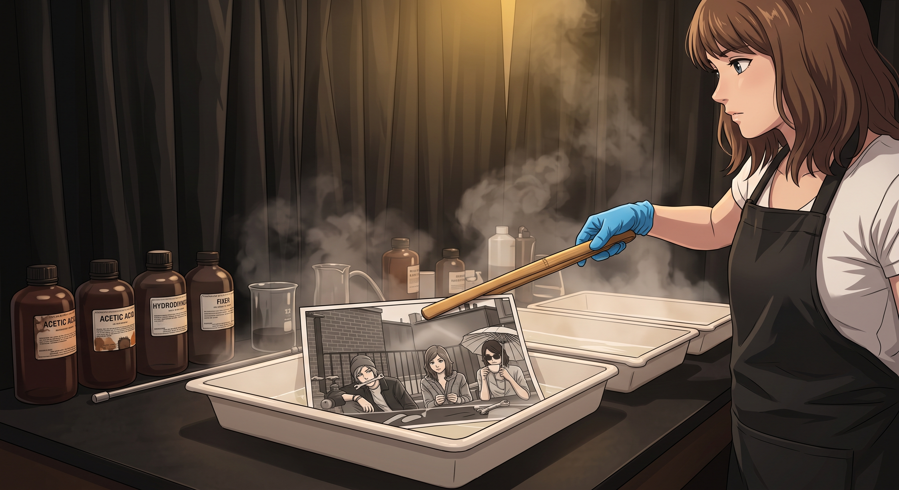

顯影


厚重的遮光黑布簾將外界的光線徹底隔絕，一樓暗房裡只剩下一盞幽暗柔和的琥珀色安全燈。
空氣中瀰漫著熟悉而略帶刺鼻的冰醋酸、對苯二酚與定影液混合的酸澀氣味。Max 戴著薄橡膠手套，站在三個並排的塑料顯影盤前，手腕輕緩而富有節奏地搖晃著第一個裝滿顯影液的淺盤。
在她身後的通風百葉門縫外，隱約傳來客廳裡黑膠唱片的爵士樂低鳴、Chloe 擺弄金屬零件發出的清脆撞擊聲，以及 Victoria 與 Kate 討論晚茶搭配的輕柔笑談。那些嘈雜在暗房的靜謐裡被過濾成了最安心的背景音。
Max 用竹製長鑷子夾起一張浸泡在藥水中的 8x10 大尺寸銀鹽相紙。
隨著藥液在相紙表面層層滑過，泛白的感光乳劑層開始發生奇妙的化學反應。原本空無一物的乳白色紙面上，銀顆粒在光影的催化下迅速聚合、沉積。
最先顯現的是天台粗糙紅磚與鋼鐵護欄的深邃輪廓，緊接著是那道橫跨在半空中的微型彩虹——雖然在黑白銀鹽的色調下失去了七彩斑斕的光譜，但那層薄如蟬翼的霧化水汽卻轉化成了極其細膩、層次分明的半透明灰色漸變，像一條被午後陽光照亮的銀色緞帶。
隨後，三個人的身影在水霧與陽光中逐漸浮現：
左側的 Chloe 屈膝蹲在金屬閥門旁，嘴裡叼著扳手，臉頰上帶著一抹黑油印，眼底的光芒銳利而肆意；中間的 Kate 雙手輕輕托起沾滿水珠的迷迭香嫩葉，眼角笑意溫潤如水；右側遮陽傘下的 Victoria 微仰著下巴，手裡的茶杯懸在半空，墨鏡滑到鼻樑中段，露出一抹難得毫無防備的驚艷與淺笑。
而整張照片最奇妙的焦點，是水霧折射的光斑剛好落在四人交匯的空隙裡，將飛濺的細小水珠定格成了一片懸浮在空中的璀璨星塵。
「完美……」Max 屏住呼吸，低聲自語。
她用鑷子將相紙夾出顯影盤，瀝乾滴落的藥水，隨後平穩地滑入停影液，最後轉移到定影槽中。
幾分鐘後，Max 擰開了暗房的白熾照明燈。
刺眼的白光下，黑白光影的細節被徹底點亮——顆粒感純淨，暗部扎實，高光通透得宛如俄勒岡海岸清晨的微風。這不是大師級精心擺拍的冷酷構圖，而是一幅充滿了泥土、金屬、茶香與生活溫度的鮮活切片。
暗房的布簾突然被掀開了一條縫，Chloe 頂著一頭凌亂的藍髮探進腦袋，手裡還拿著半塊咬了一口的可麗露：「Maxine，還沒好嗎？蔡斯大小姐正威脅要把妳那份可麗露全餵給天台的鴿子——哇哦。」
Chloe 的目光落在浸在清水漂洗槽裡的相紙上，剩下的半句話卡在了喉嚨裡。
她走進來，身上帶著天台泥土與草本冰茶的清新氣息，低頭凝視著水面上泛著微光的人影。
「老娘在裡面看起來簡直像個拯救世界的天才機械師。」Chloe 輕輕撞了一下 Max 的肩膀，眼神卻前所未有的柔軟，「而且妳把 Victoria 抓拍得像個剛被平民生活馴服的傲嬌貴族。」
「是『我們』看起來都很棒。」Max 轉過頭，笑著用紙巾擦乾手，與 Chloe 並肩看著水槽裡定格的瞬間，「這是屬於波特蘭的第一個夏天。」
水流在相紙表面輕柔地沖刷著殘留的化學藥劑，將這段帶著彩虹與笑聲的時光，永遠鎖定在不會褪色的銀鹽結晶深處。